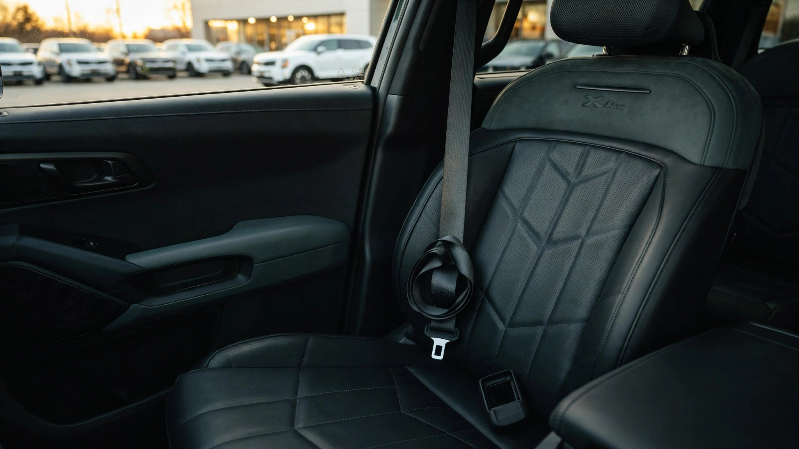

The 2027 Kia Telluride Was Recalled Twice for Seatbelts Before Its First Oil Change

I ran the numbers on the 2027 Kia Telluride's first ninety days and got this: two separate NHTSA recalls for seatbelt defects, 21,134 total vehicles affected, one supplier responsible for both, and zero oil changes due.[1] The redesigned three-row SUV was Kia's second-best seller in May, sales up 37.5 percent, and it arrived at dealerships broken in the one place that matters most.
Recall one landed in March. Kia's Georgia plant found the third-row center seatbelt buckle on 13,499 Tellurides wouldn't latch, along with 1,371 K4 sedans sharing the same part.[2] A stop-sale order followed. The supplier was Samsong Mexico, a subsidiary of South Korean parts maker Samsong, which had incorrectly assembled the buckle mechanisms.
Recall two arrived in June, and this time the failure was worse. In 6,264 Tellurides, including 4,367 hybrids, Samsong Mexico had installed an incorrect vehicle sensor in the driver's seatbelt assembly, causing the emergency locking retractor to seize when the driver tried to pull the belt across their chest.[3] NHTSA's language: the belt becomes "temporarily unavailable as an occupant restraint." Regulator-speak for the driver's seatbelt does not exist. Kia estimates about one percent of affected vehicles exhibit the defect, and owner notification letters aren't scheduled until July 31.
In NHTSA's Fatality Analysis Reporting System, the Telluride carries a death rate of 0.04 per 100 million vehicle miles traveled, among the three safest vehicles in a database of 337 models.[4] That number was earned by a Telluride with functioning seatbelts, and NHTSA's own research shows belts reduce fatal injury risk for front-seat occupants by 45 percent, saving an estimated 14,955 lives in 2017 alone.[5] Roughly 47 percent of passenger-vehicle occupant fatalities involve someone who wasn't belted. A Telluride whose driver's belt locks up before it can be worn isn't a 0.04-rate vehicle. It's a 4,500-pound SUV with an asterisk where the most important safety feature should be.
The counterargument is that zero injuries or fatalities have been reported from either recall, and Kia found both defects through internal quality monitoring rather than body bags, which is the system functioning as designed. But two seatbelt recalls from the same supplier in ninety days on the same vehicle platform suggests a quality-control gap at Samsong Mexico that a single inspection fix doesn't close, and the July 31 notification timeline means some owners will spend six weeks driving a vehicle whose driver seatbelt may not deploy.
FARS captures only fatal crashes and can't tell us how many drivers went unbelted because their belt seized rather than by choice. We don't know Samsong Mexico's defect rate across other OEM customers, and 31 total Telluride fatalities in the FARS dataset is a small sample for rate conclusions. If you own a 2027 Telluride, do not wait for the letter. Check your VIN today at nhtsa.gov/recalls, and before your next drive, pull the driver's seatbelt all the way out, let it retract, and call your dealer immediately if it seizes.
Sources & References
- NHTSA Recalls Database, 2027 Kia Telluride seatbelt recall campaigns (two separate campaigns, 2026). nhtsa.gov/recalls
- NHTSA Recall Notice, “Kia Telluride/K4: Rear Center Seatbelt Buckle May Not Latch,” March 2026. nhtsa.gov/recalls
- NHTSA, “2027 Kia Telluride Recall: Driver Seatbelt Emergency Locking Retractor,” June 2026. nhtsa.gov/recalls
- NHTSA, Fatality Analysis Reporting System (FARS), 2014–2023. nhtsa.gov
- NHTSA, Seat Belts: Get the Facts. nhtsa.gov
Data Note: FARS fatality rate for the Kia Telluride is based on 31 deaths over 2014–2023 with estimated VMT from registration and travel survey data, and low-volume models carry wider uncertainty margins. Recall vehicle counts from NHTSA recall notices; seatbelt effectiveness statistics from NHTSA research reports.